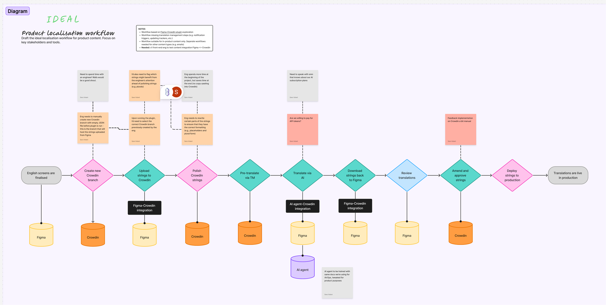
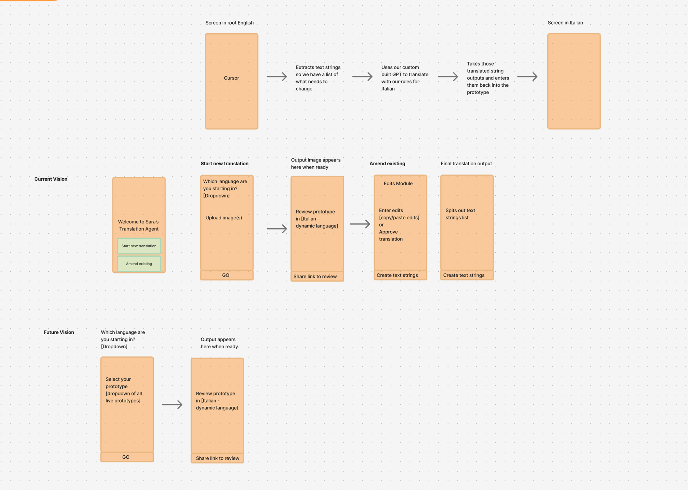
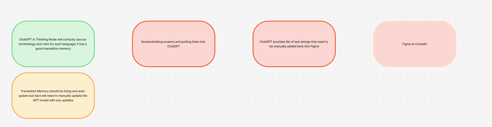
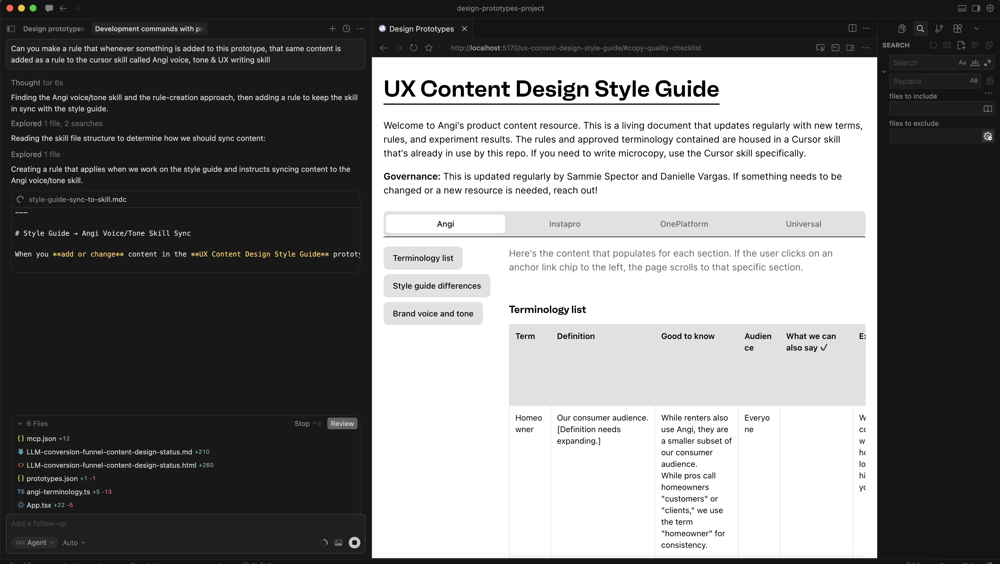
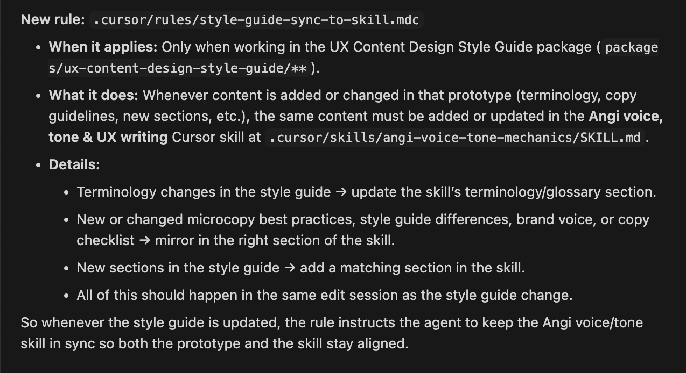
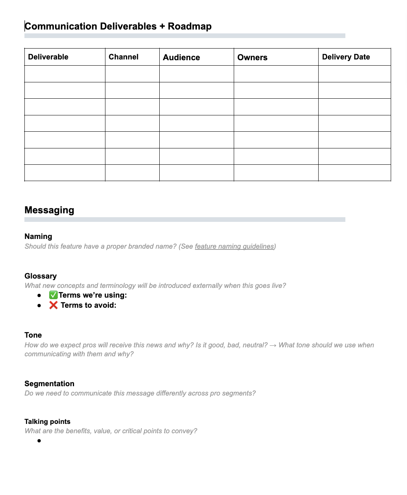
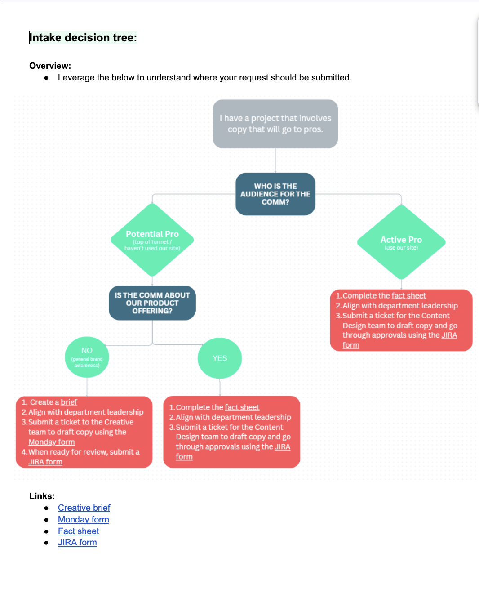
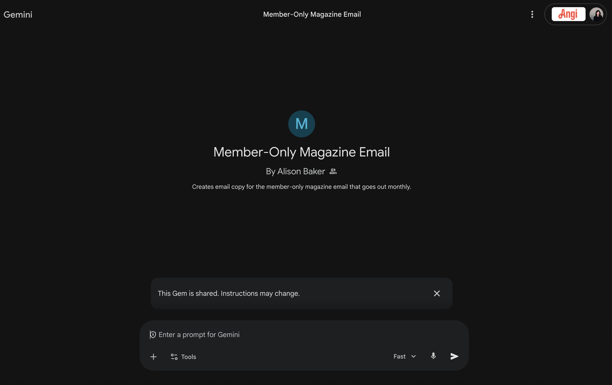

Case Study—Angi
Agentic Content Design Projects
In late 2025, Angi instituted an AI-first mandate across the company. Shortly after, a significant reduction-in-force left my team smaller, but the scope and volume of our work hadn't changed. Rather than stretching the team thin or accepting a drop in quality, I treated it as a design problem: how do we maintain output, protect craft, and give our content designers back their time for the work that actually needs a human? These are three ongoing experiments I'm running in using agents to answer that question. Localization automation has now launched, but the next two are work-in-progress, where I'm taking an iterative approach to improvement and adoption as time allows.
01
Localization Automation
Agents CrowdIn Custom GPT02
Content Design Influence over Prototypes
Cursor Skill Style Guide Governance03
Sales & Care Operations
AnGPT Gemini Gem Fact SheetsExperiment 01
Localization Automation
Challenge
Across the European branch of our business, we spent upwards of £120,000 annually on translation operations across 6 markets. The process was slow: our localization manager facilitated availability and deadlines with freelance translators, briefed them individually, worked within their schedules, and chased down reviews. The translators themselves often lacked the product context needed to translate effectively for a mobile marketplace, such as the nuance of microcopy, the logic of UI states, the specificity of our terminology. We were paying a premium for output that didn't really meet our product standards.
Approach
Before our AI-first mandate, we had begun running machine translation experimentation and kept a detailed log of where the output broke down. This included where the review became most manual, where copy/pasting and reformatting ate up the most time, and where the gaps between translation and product best practice were widest.
Machine learning alone didn't produce great output. We experimented across tools and landed on a custom GPT trained on our translation guidelines, style guide, and UI patterns across all 6 markets—this outperformed other models meaningfully for our use case.
After the AI mandate, we ramped up our testing and launched a pilot. Machine translation work was getting smoother but an unintentional consequence was a handful of new, manual work. To combat this, I built a custom agent in Cursor to handle the manual coordination and transformation work, and created screenshots that internal reviewers could work directly from, so they still had a visual to reference rather than a spreadsheet of text strings.
The final piece was connecting the output back into CrowdIn, our TMS (translation memory system), and building a feedback loop so that approved translations trained the GPT over time. The full pipeline: strings in, agent handles transformation and formatting, reviewers see a clean visual output, edits feed back into the system.



Outcome
Experiment 02
Content Design Influence over Prototypes
Challenge
As agentic design becomes the norm, designers and PMs are increasingly building directly in prototype tools. At Angi, we're using Cursor, and we're getting close to shipping small experiments straight from there. The practical consequence is that content designers are less likely to be looped in, a recurring theme for the discipline no matter the tool. My team is already stretched across numerous projects and can't take on superlative reviews for work they aren't embedded on. But we also can't afford to lose quality either, and we're too stubborn to drop anything.
Approach
I started by listening. My team was split between feeling overwhelmed and feeling guilty about it. Once again, I treated the constraint as a design problem and wanted to automate what I could to take off their plate. They couldn't be everywhere at once, and were starting to feel like they might get left behind. I realized this was less about reducing manual work, but more so not having the time nor agency to influence our product at scale.
I took our existing style guide, Angi voice and tone documentation, UX writing best practice guides, and discipline resources and insights we'd shared across the past year, and turned them into a living style guide that lives inside Cursor—where our PMs and designers are already working. The key was making it active, not passive: rather than a doc no one outside content design would read, beyond making it into a prototype, I also built it as a Cursor skill that deploys whenever a designer is building new screens or flows.
The skill includes our full terminology guide, and governs automatically. For example, if a designer uses "client" in a prompt, Cursor automatically corrects it to "customer," our official term. Same for punctuation rules, capitalisation standards, and heading styles. It works exactly like a design system, just for language.
I also connected the live style guide to the Cursor skill so that any amendments or additions automatically update the skill without manual maintenance required. Now I've been tinkering with building out a stronger governance layer: when new screens are added to our shared repo, an agent runs an automatic check and flags any net-new terminology or styling that doesn't exist or have an approved alternative in our system. Those flags come through a dedicated Slack channel, giving content designers a lightweight way to check in and course-correct without being embedded on every project.


Outcome
Experiment 03
Sales & Care Operations
Challenge
My team owns the voice of Angi's product beyond the app, which includes landing pages, transactional emails, product marketing, and most critically, the materials that enable our Sales and Care organizations. That means all Help Center wayfinding and content, troubleshooting guides, and the scripts and briefings that help reps on a traditional sales floor drive feature adoption and reinforce our subscription value propositions over the phone.
For every product release, upgrade, or policy change, my team is responsible for translating product knowledge into something Sales and Care can actually use. It requires heavy time outside the core product squad—a lot of manual writing, a lot of info-gathering, and a lot of last-minute fire drills before launch.
Approach
I created a core working group to tackle this recurring issue: myself, a principal content designer on my team, the director of learning design, and our operations manager who coordinates communications for launch. I experimented with several models before settling on a GPT trained on Angi's brand voice and tone, UX microcopy best practices, and our comms templates. We, of course, had to call it AnGPT!
The process now works to reduce manual effort and prioritize human touchpoints for reviews:
- 1.When a product launch approaches, we use the initial product brief and near-final designs to create a "fact sheet"—a playbook for next-in-line teams.
- 2.Core members of Sales and Care review the fact sheet and raise flags before anything is locked. This catches errors, off-brand language, and logistical conflicts early (two launches on the same day, launching on a Monday when Care call volume peaks, etc.).
- 3.That approved fact sheet then goes into a Gemini Gem also trained on our core content templates, and generates an FAQ, troubleshooting guide, scripts, Intercom memo, and release notes in one pass.
- 4.Human review is always the final step. With less manual work on our plate, content designers and our Sales and Care managers have clearer heads to review critical or sensitive materials.



Outcome